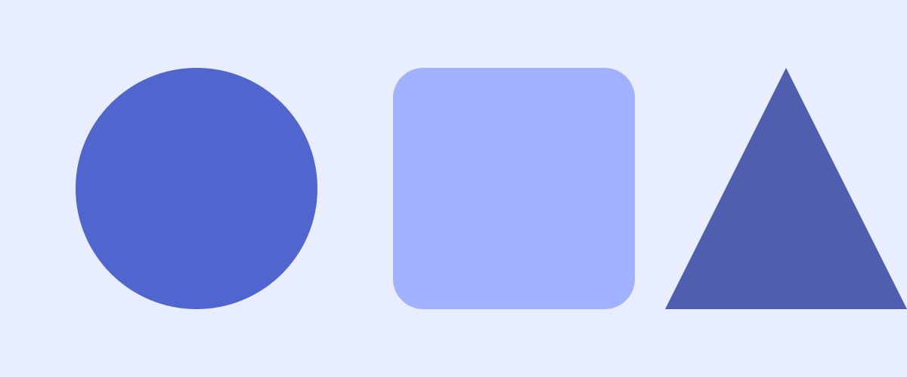

Component
Hero
The opening of a page: a heading at the largest size, a paragraph, one or two buttons, and beside them whatever the template leads with. Every template has its own hero form; this page shows Termy's, then two variants that move.
Preview
The hero as the overview uses it. The heading takes --font-size-hero; the paragraph is muted and capped at a readable measure.
The starting point
Termy is the template the other templates are made from.
Two stylesheets, one small script, no build step. Every component the retemplate contract asks for, in a quiet style you can take as it is or re-skin into something of your own.

<section class="hero">
<div class="stack">
<p class="kicker">The starting point</p>
<h1>Termy is the template the other templates are made from.</h1>
<p>Two stylesheets, one small script, no build step. Every component the retemplate contract asks for, in a quiet style you can take as it is or re-skin into something of your own.</p>
<div class="row">
<a class="btn btn-primary btn-lg" href="../index.html">Get started</a>
<a class="btn btn-lg" href="index.html">Browse components</a>
</div>
</div>
<img src="../../assets/hero.svg" alt="" width="1200" height="500">
</section>Variants
Text only
The same hero with nothing beside the words. Add hero-text: the grid becomes one column and the stack is capped at a readable measure. Every template carries this variant with the same class.
Words only
A hero with nothing beside it.
One column, the text measure capped so the lines stay readable, and everything else the hero has: the kicker, the heading at the hero size, the paragraph, the buttons.
<section class="hero hero-text">
<div class="stack">
<p class="kicker">Words only</p>
<h1>A hero with nothing beside it.</h1>
<p>One column, the text measure capped so the lines stay readable, and everything else the hero has: the kicker, the heading at the hero size, the paragraph, the buttons.</p>
<div class="row">
<a class="btn btn-primary btn-lg" href="../index.html">Get started</a>
<a class="btn btn-lg" href="index.html">Browse components</a>
</div>
</div>
</section>Image led
A hero that gives the picture most of the room: the words take one column and the image three, a 25/75 split at desktop widths that stacks on a phone. Add hero-image-half as well for an even 50/50. Every template carries this variant with the same classes.
Picture led
The picture takes three quarters.
Words in the first column, the picture in the rest.
<section class="hero hero-image">
<div class="stack">
<p class="kicker">Picture led</p>
<h1>The picture takes three quarters.</h1>
<p>Words in the first column, the picture in the rest.</p>
<div class="row">
<a class="btn btn-primary btn-lg" href="../index.html">Get started</a>
</div>
</div>
<img src="../../assets/hero.svg" alt="" width="1200" height="750">
</section>The typewriter
The heading types itself out at a steady pace, and the cursor the template puts after every hero heading keeps blinking when it is done. It runs once. Add termy-type to the hero; the global prefers-reduced-motion rule stops it.
login: retemplate
hello, operator.
Eighteen characters at a steady clip, then the cursor keeps blinking. Change the text and the width in ch together.
<section class="hero termy-type">
<div class="stack">
<p class="kicker">login: retemplate</p>
<h1>hello, operator.</h1>
<p>Eighteen characters at a steady clip, then the cursor keeps blinking. Change the text and the width in ch together.</p>
<div class="row">
<a class="btn btn-primary btn-lg" href="../index.html">get started</a>
<a class="btn btn-lg" href="index.html">browse components</a>
</div>
</div>
<img src="../../assets/hero.svg" alt="" width="1200" height="500">
</section>The boot
A progress bar fills in twenty blocks, then the stack prints a line at a time, stepped, the way a boot log does. It runs once. Add termy-boot to the hero; the global prefers-reduced-motion rule stops it.
loading
ready
Booted.
The bar fills in twenty blocks over two seconds; then the kicker, the heading, this line and the buttons print one after another, each at once.
<section class="hero termy-boot">
<div class="stack">
<p class="termy-progress">loading <span></span></p>
<p class="kicker">ready</p>
<h1>Booted.</h1>
<p>The bar fills in twenty blocks over two seconds; then the kicker, the heading, this line and the buttons print one after another, each at once.</p>
<div class="row">
<a class="btn btn-primary btn-lg" href="../index.html">get started</a>
<a class="btn btn-lg" href="index.html">browse components</a>
</div>
</div>
</section>Classes
The rules live in css/global.css: the hero under /* == utilities == */ with the other layout helpers, the variant under /* == hero variants == */.
| Class | Purpose |
|---|---|
.hero | The opening section: a grid of a text stack and, in most templates, a picture or a piece of flare |
.hero .stack | The kicker, heading, paragraph and button row |
.hero .row | The buttons |
.hero.hero-text | Words only: one column, capped measure (every template) |
.hero.hero-image | Picture led: words one column, picture three; with .hero-image-half an even split (every template) |
.hero.termy-type | The heading types itself; width in ch matches the text |
.hero.termy-boot | Progress bar, then the stack prints line by line |
.termy-progress | The bar; its span fills in twenty steps |
Notes
- One
<h1>per page: the hero's heading is it. The kicker above it is a<p>, not a heading. - Above
48remthe hero is two columns, text then picture; below, it stacks. The variant keeps whatever layout its markup implies. - The variant is CSS only. Its animation is declared with
bothfill, so the page is correct before it starts and after it ends, and the globalprefers-reduced-motionrule stops it. - Another template ignores
termy-revealand shows its own hero; any flare markup inside sits in the template's flare wrapper so a swap can drop it.